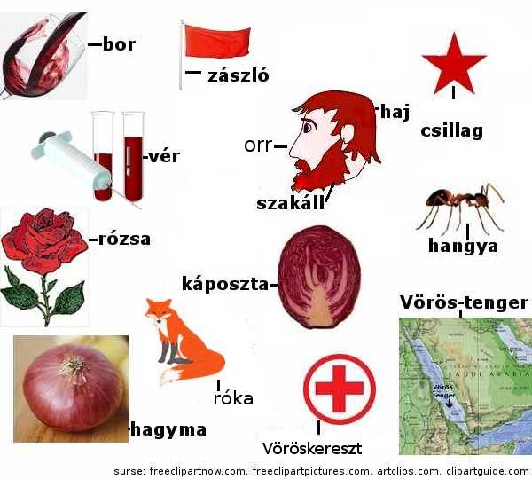
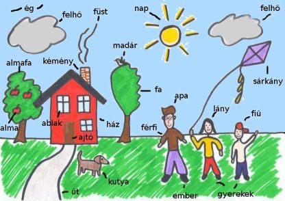
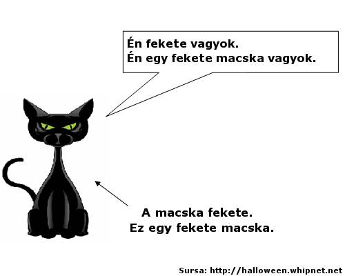
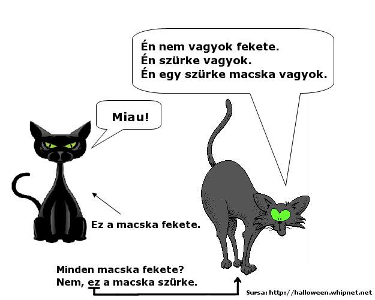
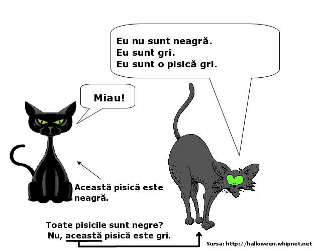

Primii pași · Lecția 05
Culorile
Numește culorile și observă cum se modifică substantivele la plural și la acuzativ.
În această pagină
Să începem această lecție cu numele culorilor:
| fehér (alb) |
| sárga (galben) |
| narancs(sárga) (portocaliu) |
| kék (albastru) |
| lila (violet) |
| piros (roșu) |
| rózsaszín (roz) |
| zöld (verde) |
| barna (maro) |
| szürke (gri) |
| fekete (negru) |
Putem forma noi cuvinte cu ajutorul lui világos (deschis) si sötét (închis), de exemplu:
| világoskék | világoszöld |
| sötétkék | sötétzöld |
Un cuvânt interesant al limbii maghiare este vörös care reprezintă culoarea roșie, la fel ca piros, pentru maghiari însă unele lucruri sunt piros, altele vörös. O explicație posibilă este că vörös (folosit mai rar decât piros) se referă de obicei la obiecte "organice", și se mai folosește în cazuri în care culoarea roșie are o semnificație simbolică sau o încărcătură emoțională. "Piros", în schimb, este neutru, semnificând "doar" culoarea roșie.
Cu următoarele cuvinte folosim vörös (unele sunt compuse):
- vörösbor vin roșu
- unele plante:
- vöröshagyma ceapă roșie
- vöröskáposzta varză roșie
- unele animale:
- vöröshangya furnică roșie
- vörös róka vulpe roșcată
- vörös csillag stea roșie
- Vöröskereszt Crucea Roșie
- Vöröshadsereg Armata Roșie
- Vörös-tenger Marea Roșie
- vörös haj păr roșcat (dar dacă este vopsit în roșu, poate fi și piros)
- vörös szakáll barbă roșcată
- vörös nap soarele (când apune)
Pot fi și piros, și vörös:
- piros/vörös rózsa trandafir roșu
- piros/vörös zászló steag roșu
- piros/vörös vér sânge roșu
- piros/vörös arc față roșie
- piros/vörös orr nas roșu
- piros/vörös fül ureche roșie

Să formăm acum propoziții simple pe baza imaginii următoare:

Az ég kék. Cerul este albastru.
A felhő szürke. Norul este gri.
A sárkány lila. Zmeul este violet.
...

Vezi ilustrația în română

Vezi ilustrația în română

Observăm încă o dată că la persoana a 3-a verbul "a fi" este ascuns:
A macska fekete Pisica este neagră
dar la celelalte persoane verbul este prezent:
Én szürke vagyok Eu sunt gri.
Când nu apare explicit verbul "a fi", ordinea cuvintelor este decisivă:
A macska fekete Pisica este neagră
dar A fekete macska înseamnă numai "Pisica neagră", de ex. într-o
propoziție completă:
A fekete macska beteg. Pisica neagră este bolnavă.
Un alt exemplu:
Az alma piros. Mărul este roșu.
A piros alma a fa alatt van. Mărul roșu este sub pom.
Să vorbim acum despre pluralul substantivelor, un subiect pe care l-am amânat până acum.
După cum probabil ați ghicit deja, pluralul se formează cu "k", ca în
exemplul din titlu:
színek (culori)
Ca și cu "t"-ul cazului acuzativ, câteodată adăugăm o vocală de legătură înainte de "k", și sunt cazuri în care se modifică și cuvântul de bază. Pentru a explica acest fenomen, trebuie să menționăm armonia vocalelor, ceea ce ne va fi de folos la toate sufixele pe care vom învăța de acum încolo.
Vocalele din limba maghiară se pot grupa în următoarele 3 categorii:
- a á o ó u ú (vocale posterioare)
- e é i í (vocale anterioare nerotunjite)
- ö ő ü ű (vocale anterioare rotunjite)
De obicei, vocale de tip 1 nu apar împreună cu vocale de tip 2, dar mai ales de tip 3 în același cuvânt, excepții fiind unele cuvinte compuse sau cuvinte împrumutate din alte limbi.
Când alipim un sufix la un cuvânt, sufixul trebuie să se armonizeze cu cuvântul de bază, adică să conțină vocale din aceeași categorie, aceleași reguli fiind valabile și pentru vocalele de legătură.
Majoritatea sufixelor au două variante, una cu vocală de tip 1, cealaltă cu vocală de tip 2, care se aplică și cuvintelor cu vocale de tip 3. Dacă cuvântul este "mixt", atunci primește, în general, varianta de sufix de tip 1. Unele sufixe au și o a treia variantă pentru cuvinte de tip 3. La cuvintele compuse se iau în considerare vocalele din ultimul component.
Pluralul substantivelor se formează în felul următor:
-
Dacă cuvântul se termină într-o vocală, alipim un "k", iar dacă
ultima vocală este "a" sau "e", aceasta se lungește,
devenind "á" sau "é".
Exemple:
fiú băiat - fiúk băieți
tű ac - tűk
hajó vapor - hajók
felhő nor - felhők
kutya câine - kutyák
macska pisică - macskák
este seară - esték
egyetemista student/studentă - egyetemisták
ajtó ușă - ajtók
autó automobil - autók
kapu poartă - kapuk
Există și câteva exceptii:
szó cuvânt - szavak
ló cal - lovak
tó lac - tavak
-
Dacă cuvântul se termină într-o consoană, iar vocala din ultima silabă a cuvântului
este de tipul 1. (a á o ó u ú), alipim
"-ok" sau "-ak".
Exemple:
lány fată - lányok fete
barát prieten - barátok
tanár profesor - tanárok
ablak fereastră - ablakok
határ hotar - határok
mókus veveriță - mókusok
váll umăr - vállak
angol englez - angolok
În unele cazuri ultima vocală din cuvânt se scurtează:
madár pasăre - madarak
kút fântână - kutak
nyúl iepure - nyulak
-
Dacă cuvântul se termină într-o consoană, iar vocala din ultima silabă este de tipul
2. (e é i í), alipim "-ek".
Exemple:
gyerek copil - gyerekek copii
ember om - emberek
hír știre - hírek
szék scaun - székek
gép mașină - gépek
Observăm și aici scurtarea ultimei vocale în unele cazuri (sunt cuvinte în care această vocală chiar dispare):
egér șoarece - egerek
kerék roată - kerekek
telek teren - telkek
Sunt și excepții (unde pluralul se formează cu "-ok" sau "-ak"):
zsír grăsime - zsírok grăsimi
nyíl săgeată - nyilak săgeți
-
Dacă cuvântul se termină într-o consoană, iar vocala din ultima silabă este de tipul
3. (ö ő ü ű), alipim "-ök".
Exemple:
ismerős cunoștință - ismerősök
erőd fortăreață - erődök
hős erou - hősök
gyümölcs fruct - gyümölcsök
Aici avem multe excepții unde pluralul se formează cu "-ek":fül ureche - fülek
felnőtt adult - felnőttek
könyv carte - könyvek
Observații:
- O altă abordare a problemei pluralului găsiți pe Wikipedia.
- Deoarece există multe excepții de la aceste reguli, ele nu trebuie neapărat memorizate. Cu exerciții, după o vreme veți dezvolta o intuiție despre această "armonie a vocalelor" și veți "ghici" ușor vocala potrivită pentru un sufix. Chiar dacă greșiți forma sufixului, veți fi înțeleși de partenerul de dialog.
-
Cuvintele care au forme similare la singular, de obicei au forme similare și la
plural, ceea ce ajută învățarea.
De ex. arc (față) - arcok și harc (luptă) - harcok. -
De obicei, cazul acuzativ (pe care l-am învățat în
lecția 1) se
formează cu aceleași vocale de legătură ca și pluralul (cu "t" în loc
de "k").
Astfel, la acuzativ:
nyulat, kutat, fiút, ablakot, madarat etc. De ex. Láttam egy madarat (Am văzut o pasăre). -
Există câteva excepții în care cazul acuzativ nu are vocală de legătură înaintea lui
"t", pe când pluralul are totdeauna această vocală.
Exemple:
hír știre, hírt știre (acuzativ), hírek știri
lány fată, lányt fată (acuzativ), lányok fete -
Putem observa semnul pluralului și la pronume:
ő el/ea - ők ei/ele
ez acest(a)/această/aceasta, az acel(a)/ace(e)a - ezek aceste, azok acele
ki? cine?, mi? ce? - kik? mik? cine? ce? (plural) -
La fel și "t"-ul cazului acuzativ:
őt el/ea (acuzativ)
ezt acest(a)/această/aceasta (acuzativ), azt acel(a)/ace(e)a (acuzativ)
kit? mit? cine? ce? (acuzativ)
Pluralul adjectivelor se formează foarte similar cu cel al substantivelor, cu puține
excepții:
- Nu se folosește forma -ök, și în cazul vocalelor de tip 3. avem -ek (exemplu: vörös - vörösek)
- Uneori se pune -ok, -ak sau -ek, chiar dacă cuvântul se termină într-o vocală (exemplu: amerikai (american) - amerikaiak)
|
fehér - fehérek sárga - sárgák kék - kékek lila - lilák piros - pirosak zöld - zöldek barna - barnák szürke - szürkék fekete - feketék |
|
magas (înalt) - magasak alacsony (scund) - alacsonyak kövér (gras) - kövérek sovány (slab) - soványak gazdag (bogat) - gazdagok szegény (sărac) - szegények jó (bun) - jók rossz (rău) - rosszak |
În legătură cu pluralul, limba maghiară are niște ciudățenii. Adjectivul se acordă la plural cu subiectul propoziției numai dacă este nume predicativ. Dacă este atribut adjectival, rămâne la singular. În unele cazuri și substantivul este la singular, deși are sens de plural, și tocmai când este precedat de o exprimare a cantității.
Să vedem câteva exemple de folosire a pluralului:
Exemplu 1.
A fák zöldek. Copacii sunt verzi.
(Nume predicativ: adjectivul este la plural.)
Exemplu 2.
A kertben fák vannak. În grădină sunt copaci.
(Substantivul este la plural.)
Exemplu 3. (*diferit de limba română)
A kertben zöld fák vannak. În grădină sunt copaci verzi.
(Atribut: adjectivul este la singular, deși substantivul este la plural.)
Exemplu 4. (*diferit de limba română)
A kertben három fa van. În grădină sunt trei copaci.
(Dacă avem un numeral, substantivul nu mai este la plural.)
Exemplu 5. (*diferit de limba română)
A kertben három zöld fa van. În grădină sunt trei copaci verzi.
(La fel ca ex. 4., dar cu adjectiv.)
Dacă un cuvânt este la plural și în cazul acuzativ, adăugăm prima dată sufixul pluralului, apoi sufixul cazului acuzativ.
Exemple:
"Látom a házakat." Văd casele.
"Elhoztad a gyerekeket?" Ai adus copiii?
ház casă
házak case
házakat case (acuzativ)
a házakat casele (acuzativ, cu articol hotărât)
gyerek copil
gyerekek copii
gyerekeket copii (acuzativ)
a gyerekeket copiii (acuzativ, cu articol hotărât)
În această lecție am învățat numele culorilor, și am explicat cum se formează cazul acuzativ și pluralul substantivelor și al adjectivelor. Semnul pluralului este (-k), iar semnul cazului acuzativ este (-t). În multe cazuri adăugăm o vocală de legătură care se armonizează cu vocalele din cuvântul de bază. Am văzut niște exemple de folosire a acestor forme.
Ca relaxare încercați să "descifrați" următoarea poezie de Dezső Kosztolányi. Multe dintre cuvinte și forme gramaticale vă vor fi necunoscute, dar nu vă faceți griji, este suficient dacă recunoașteți cuvinte sau propoziții simple. Ducând mouse-ul deasupra cuvintelor, veți vedea traducerile lor în română. Nu traducem întregul text, doar prima apariție a fiecărui cuvânt, și sperăm că veți înțelege poezia cu acest "mini-dicționar". Dacă sunt propoziții pe care nu le înțelegeți, întrebați în comentarii.
Mai jos găsiți un videoclip cu cineva recitând această poezie. (Nu cunoaștem actorul, am găsit videoclipul pe internet.) Traducerea în engleză a acestei poezii o puteți citi aici.
Mostan színes tintákról álmodom.
Mostan színes tintákról álmodom.
Legszebb a sárga. Sok-sok levelet
e tintával írnék egy kisleánynak,
egy kisleánynak, akit szeretek.
Krikszkrakszokat, japán betűket írnék,
s egy kacskaringós, kedves madarat.
És akarok még sok másszínű tintát,
bronzot, ezüstöt, zöldet, aranyat,
és kellene még sok száz és ezer,
és kellene még aztán millió:
tréfás-lila, bor-színű, néma-szürke,
szemérmetes, szerelmes, rikitó,
és kellene szomorú-viola
és téglabarna és kék is, de halvány,
akár a színes kapuablak árnya
augusztusi délkor a kapualján.
És akarok még égő-pirosat,
vérszínűt, mint a mérges alkonyat,
és akkor írnék, mindig-mindig írnék.
Kékkel húgomnak, anyámnak arannyal:
arany-imát írnék az én anyámnak,
arany-tüzet, arany-szót, mint a hajnal.
És el nem unnám, egyre-egyre írnék
egy vén toronyba, szünes-szüntelen.
Oly boldog lennék, Istenem, de boldog.
Kiszínezném vele az életem.
Urmărește videoclipul pe YouTube
Exerciții:
- Puneți la plural aceste propoziții, în care adjectivul este nume predicativ.
- În aceste propoziții, adjectivul este atribut. Puneți-le și pe acestea la plural.
- Aici, în unele propoziții adjectivul este nume predicativ, în altele - atribut. Puneți propozițiile la plural.
- Răspundeți la întrebări cu cuvintele din paranteză, punându-le la acuzativ și la plural.
|
Ez a hangya fekete. → Ezek a hangyák feketék. Ez a róka fehér. → Ez a szín világos. → Ez a hajó amerikai. → Ez a tű rossz. → Ez a nyúl barna. → Ez a hír jó. → Ez a férfi fiatal. → Ez a gyümölcs piros. → Ez a nap különös. → |
Furnica asta e neagră. → Furnicile astea sunt negre. Vulpea asta e albă. → Vulpile astea sunt albe. Culoarea asta e deschisă. → Culorile astea sunt deschise. Vaporul ăsta e american. → Vapoarele astea sunt americane. Acul ăsta e prost. → Acele astea sunt proaste. Iepurele ăsta e cafeniu. → Iepurii ăștia sunt cafenii. Știrea asta e bună. → Știrile astea sunt bune. Bărbatul ăsta e tânăr. → Bărbații ăștia sunt tineri. Fructul ăsta e roșu. → Fructele astea sunt roșii. Ziua asta e deosebită. → Zilele astea sunt deosebite. |
|
Ez jó barack. → Ezek jó barackok. Ez egy különös hír. → Ő egy gazdag nő. → Ez szép kutya. → Ez egy öreg férfi. → Ez egy fiatal macska. → Ő jó ember. → Ez piros rózsa. → Ez sovány gyerek. → Ez szegény fiú. → |
Asta e o caisă bună. → Astea sunt caise bune. Asta e o știre deosebită. → Astea sunt știri deosebite. Ea e o femeie bogată. → Ele sunt femei bogate. Ăsta e un câine frumos. → Ăștia sunt câini frumoși. Ăsta e un bărbat bătrân. → Ăștia sunt bărbați bătrâni. Asta e o pisică tânără. → Astea sunt pisici tinere. El e om bun. → Ei sunt oameni buni. Ăsta e un trandafir roșu. → Ăștia sunt trandafiri roșii. Ăsta e un copil slab. → Ăștia sunt copii slabi. Ăsta e un băiat sărac. → Ăștia sunt băieți săraci. |
|
Ez magyar könyv. → Ezek magyar könyvek Ez a ház magas. → Ezek a házak magasak. Ez egy fiatal macska. → Ez a lány szép. → Ez beteg állat. → Ez a kutya éhes. → Ez sötét szín. → Ez a macska kövér. → Ez fekete mókus. → |
Asta e o carte maghiară. → Astea sunt cărți maghiare. Casa asta e înaltă. → Casele astea sunt înalte. Asta e o pisică tânără. → Astea sunt pisici tinere. Fata asta e frumoasă. → Fetele astea sunt frumoase. Ăsta e un animal bolnav. → Astea sunt animale bolnave. Câinele ăsta e flămând. → Câinii ăștia sunt flămânzi. Asta e o culoare închisă. → Astea sunt culori închise. Pisica asta e grasă. → Pisicile astea sunt grase. Asta e o veveriță neagră. → Astea sunt veverițe negre. |
|
- Mit csinálsz? (jó asztal) - Jó asztalokat. - Mit köszönsz? (a szép rózsa) - ... - Mit olvasol? (angol könyv) - ... - Mit nézel? (a zöld fa) - ... - Mit látsz? (fehér hajó) - ... - Mit hozol? (rózsaszín szék) - ... |
- Ce faci? - Mese bune. (vorbește un tâmplar) - Pentru ce mulțumești [Ce mulțumești]? - Pentru trandafirii [Trandafirii] frumoși. - Ce citești? - Cărți englezești. - Ce privești? - Copacii verzi. - Ce vezi? - Vapoare albe. - Ce aduci? - Scaune roz. |
".